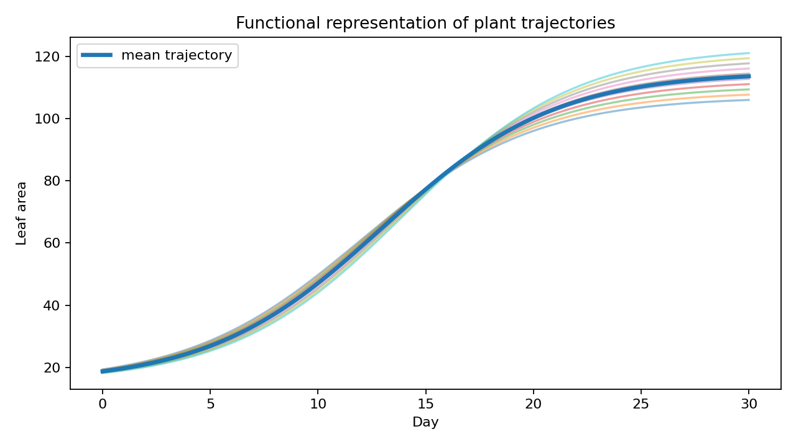

OmniPhenoR Functional Data Analysis: Treating Plant Trajectories as Phenotypes
Source:vignettes/v27-functional-data-analysis.Rmd
v27-functional-data-analysis.RmdPurpose
Functional data analysis (FDA) treats each complete trajectory as an object rather than treating each time point as an unrelated variable. This is useful for growth, disease, senescence, canopy cover, and stress-recovery phenotypes. Ramsay and Silverman provide the broad functional-data framework (Ramsay and Silverman 2005), and Yao, Müller, and Wang developed functional PCA methods for sparse irregular longitudinal data (Yao et al. 2005). OmniPhenoR 0.4.0 provides a lightweight R-first functional representation and FPCA entry point.

1. Build a common functional grid
d <- subset(pheno_data("growth_series"), trait == "leaf_area")
f <- pheno_functional(
d,
id = "plant_id",
time = "day",
value = "value"
)
f
#> <pheno_functional>
#> subjects: 12
#> grid points: 5Rows are plants and columns are times. This representation makes the statistical unit explicit.
2. Use a denser grid when interpolation is defensible
f_dense <- pheno_functional(
d,
"plant_id",
"day",
"value",
grid = seq(0, 28, by = 2),
method = "linear"
)
dim(f_dense$matrix)
#> [1] 12 15A denser grid does not create additional biological information. It creates a smoother numerical representation of the observed trajectories.
3. Nearest alignment when interpolation is questionable
f_near <- pheno_functional(
d,
"plant_id",
"day",
"value",
grid = seq(0, 28, by = 4),
method = "nearest"
)This may be preferable for stage-like phenotypes or when linear interpolation between sparse observations has no meaningful interpretation.
4. Functional PCA
fp <- pheno_fpca(f, ncomp = 3)
fp$explained
#> [1] 0.91838625 0.04260655 0.02001472
head(fp$scores)
#> # A tibble: 6 × 4
#> id PC1 PC2 PC3
#> <chr> <dbl> <dbl> <dbl>
#> 1 P01 -0.376 -5.70 0.198
#> 2 P02 -1.10 0.657 -0.256
#> 3 P03 1.95 0.637 2.74
#> 4 P04 2.30 -1.62 -1.92
#> 5 P05 10.1 0.988 0.429
#> 6 P06 15.0 -1.44 -0.507FPCA scores can become derived phenotypes. A first component may capture overall size, while subsequent components may capture timing or curvature. Interpretation must be based on the loadings/trajectory perturbations rather than assumed from component number.
5. Treatment interpretation through scores
scores <- as.data.frame(fp$scores)
design <- unique(d[c("plant_id", "treatment", "block")])
score_design <- merge(scores, design, by.x = "id", by.y = "plant_id")
score_design
#> id PC1 PC2 PC3 treatment block
#> 1 P01 -0.3763896 -5.6960161 0.19757820 control 1
#> 2 P02 -1.0986192 0.6566636 -0.25588728 control 2
#> 3 P03 1.9480772 0.6374460 2.73546127 control 3
#> 4 P04 2.2982821 -1.6158186 -1.92061651 control 4
#> 5 P05 10.0721551 0.9884652 0.42894022 nitrogen 1
#> 6 P06 15.0496020 -1.4358884 -0.50731086 nitrogen 2
#> 7 P07 12.9879967 1.3425246 0.66817446 nitrogen 3
#> 8 P08 12.4973641 2.8438394 -1.13996243 nitrogen 4
#> 9 P09 -13.1722858 -0.7512060 -3.04776738 drought 1
#> 10 P10 -11.3045695 -1.7932560 2.73282613 drought 2
#> 11 P11 -16.0039357 2.6503671 0.02935672 drought 3
#> 12 P12 -12.8976774 2.1728792 0.07920745 drought 4Statistical tests of FPCA scores should use the original experimental design. PCA does not make repeated plants independent or remove blocking.
6. Trajectory clustering
clusters <- pheno_trajectory_cluster(
f,
centers = 3,
representation = "fpca",
ncomp = 2,
seed = 123
)
clusters
#> # A tibble: 12 × 2
#> id cluster
#> <chr> <int>
#> 1 P01 1
#> 2 P02 1
#> 3 P03 1
#> 4 P04 1
#> 5 P05 1
#> 6 P06 1
#> 7 P07 1
#> 8 P08 1
#> 9 P09 3
#> 10 P10 3
#> 11 P11 2
#> 12 P12 2Clusters are descriptive patterns, not automatically biological classes. Stability across seeds, acquisition subsets, and environments should be evaluated before attaching biological labels.
7. Multitrait trajectories
OmniPhenoR keeps traits in long form before functional transformation. For example, leaf area and green fraction should usually be represented separately first, because they have different units and biological meanings.
all_d <- pheno_data("growth_series")
area_fun <- pheno_functional(subset(all_d, trait=="leaf_area"),
"plant_id","day","value")
green_fun <- pheno_functional(subset(all_d, trait=="green_fraction"),
"plant_id","day","value")Scores from the two functional analyses can then be combined at the plant level if a multivariate analysis is desired.
8. Derivatives as functional traits
p1 <- subset(d, plant_id == "P01")
dv <- pheno_derivative(p1, "day", "value", smooth = "spline")
dv
#> # A tibble: 5 × 5
#> time value derivative order smoothing
#> <dbl> <dbl> <dbl> <int> <chr>
#> 1 0 14.5 2.79 1 spline
#> 2 7 34.0 3.73 1 spline
#> 3 14 66.7 4.87 1 spline
#> 4 21 102. 3.56 1 spline
#> 5 28 117. 2.06 1 splineThe derivative curve can capture growth velocity. Second derivatives can capture acceleration, but they are highly sensitive to noise and smoothing.
9. Sparse sampling and sensitivity
pheno_sampling_sensitivity(
d,
time = "day",
value = "value",
subject = "plant_id",
every = c(2,3),
metric = "auc"
)
#> # A tibble: 24 × 6
#> series every metric full thinned relative_error
#> <chr> <dbl> <chr> <dbl> <dbl> <dbl>
#> 1 P01 2 auc 1878. 1851. -0.0147
#> 2 P01 3 auc 1878. 1224. -0.348
#> 3 P02 2 auc 1878. 1868. -0.00536
#> 4 P02 3 auc 1878. 1259. -0.329
#> 5 P03 2 auc 1916. 1929. 0.00685
#> 6 P03 3 auc 1916. 1249. -0.348
#> 7 P04 2 auc 1921. 1944. 0.0120
#> 8 P04 3 auc 1921. 1293. -0.327
#> 9 P05 2 auc 1984. 1999. 0.00727
#> 10 P05 3 auc 1984. 1328. -0.331
#> # ℹ 14 more rowsIf FPCA patterns change dramatically after removing one acquisition, the functional phenotype may be less stable than the smooth plot suggests.
10. FDA versus nonlinear growth models
A nonlinear growth model estimates a small set of equation-specific parameters. FDA makes fewer assumptions about curve shape and focuses on variation among complete functions. These are complementary approaches.
Use nonlinear models when the model parameters themselves have clear scientific meaning and fits are adequate. Use FDA when trajectory shape is the phenotype and a fixed parametric equation would be unnecessarily restrictive.
Reporting checklist
Report grid definition, interpolation/smoothing, missing-data strategy, scaling, number of components, variance explained, how component scores were interpreted, cluster algorithm if used, experimental-unit analysis of scores, and sensitivity to time-grid choices.
Final perspective
Functional analysis shifts the question from “at which date are treatments different?” to “how do complete biological trajectories differ?” OmniPhenoR provides this representation while preserving the original subject identity and raw observations.
Extended worked interpretation
Functional PCA is especially useful when individual trajectories differ in coordinated ways that are difficult to summarize with one nonlinear parameter. For example, one component may represent overall canopy size while another separates early from late expansion. Such patterns should be interpreted from the eigenfunctions and reconstructed trajectories, not from component names alone.
Before clustering, inspect whether FPCA scores are dominated by treatment means, acquisition gaps or scale differences among traits. If several traits are combined, their units can dominate Euclidean distances unless an explicit scaling decision is made. OmniPhenoR keeps the first 0.4.0 functional layer intentionally transparent rather than hiding these choices behind a large automatic pipeline.
A practical sensitivity analysis is to repeat FPCA after modestly thinning the time grid. If the leading temporal patterns change completely, the apparent functional structure may be driven more by interpolation than by measured plant dynamics.